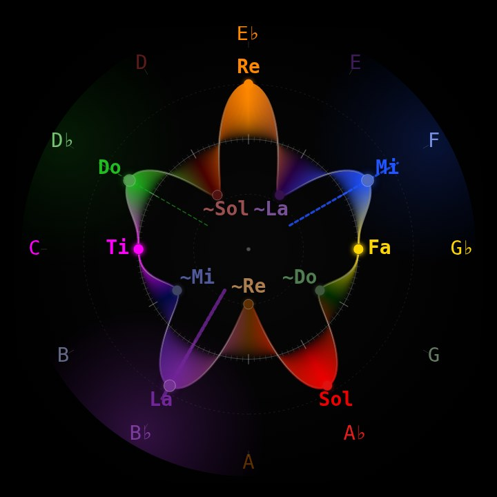

Tonal Field
Lessons by Brian Hunker
Each lesson plays a piece of music and draws it on the tonal field as it sounds. Every note takes the color of its function, and the ring turns as the music moves through it.
g(x) = cos(x)·cos(6x) + (1/6)·sin(x)·sin(6x) = (7/12)·cos(5x) + (5/12)·cos(7x)
